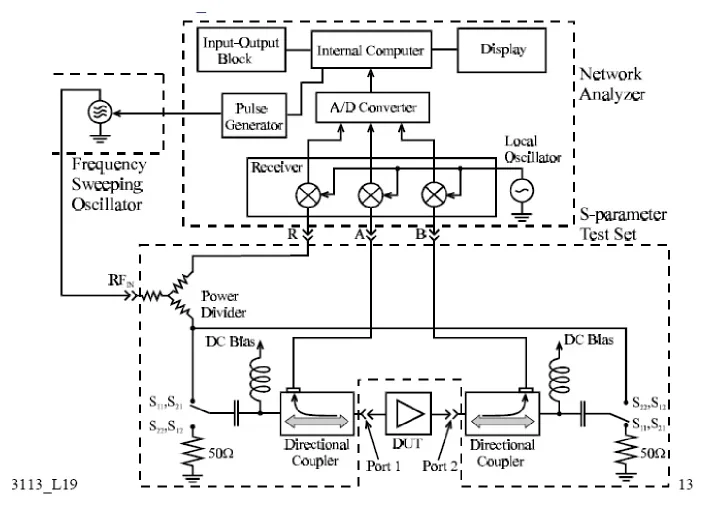

01 · S 参数与矢量网络分析仪§
把第二章的反射系数、第六章的双端口结构和实验仪器接起来。
一、这一页要解决什么§
前两章我们用 $\Gamma$ 和 $Z_{\mathrm{in}}$ 描述「一根线遇到一个负载」的情况。一旦微波元件有两个或更多端口（滤波器、耦合器、功率分配器都是），单一的 $\Gamma$ 就不够用了。散射参数 $S$（scattering parameters）是把每个端口都当成「同时有入射波和反射波」的统一描述方式，VNA 就是测它的标准仪器。
二、入射 / 反射 / 传输波§
把每个端口都看成传输线接口，约定：
- $a_i$：从外部射入端口 $i$ 的归一化功率波（入射波幅度）
- $b_i$：从端口 $i$ 射回外部的归一化功率波（出射波幅度）
「归一化」是指对参考阻抗 $Z_0$（多数情况下 $50\,\Omega$）作功率归一，使 $|a_i|^2$、$|b_i|^2$ 直接对应入射和反射功率。
二端口网络的 $S$ 参数定义为：
$$ \begin{pmatrix} b_1 \\ b_2 \end{pmatrix} = \begin{pmatrix} S_{11} & S_{12} \\ S_{21} & S_{22} \end{pmatrix} \begin{pmatrix} a_1 \\ a_2 \end{pmatrix} $$
每个分量的物理含义（其它端口接匹配负载，让 $a_j = 0$）：
| 参数 | 含义 | 在仪器上看 |
|---|---|---|
| $S_{11}$ | 端口 1 的输入反射系数 | 1 端口反射 |
| $S_{21}$ | 端口 1 → 端口 2 的正向传输系数 | 正向传输（最常用） |
| $S_{12}$ | 端口 2 → 端口 1 的反向传输系数 | 反向传输（互易元件 $S_{12}=S_{21}$） |
| $S_{22}$ | 端口 2 的输入反射系数 | 2 端口反射 |
三、$S_{11}$ 与第二章的 $\Gamma$ 是什么关系？§
当 2 端口接匹配负载时（$a_2 = 0$），$S_{11} = b_1 / a_1$ 正好就是端口 1 的反射系数。也就是说：
$$ S_{11}\big|_{a_2=0} = \Gamma_{\mathrm{in,1}} $$
VNA 「测 $S_{11}$」 = 把测试信号注入端口 1，测从端口 1 反射回来的复波；屏幕上选「史密斯圆图」就直接是 $\Gamma_1$ 的极坐标轨迹。
四、矢量网络分析仪框图§

图 1-3：合成信号源 → S 参数测试装置（定向耦合器 + 开关）→ 幅相接收机 → DSP → 显示。
四块的角色：
| 模块 | 干什么 |
|---|---|
| 合成信号源 | 产生 30 kHz–3 GHz 扫频射频信号；扫频与接收机锁相 |
| S 参数测试装置 | 用定向耦合器把信号分成参考 $R$、入射 $A$、传输 $B$；用开关控制激励方向 |
| 幅相接收机 | 把 RF 信号下变频到 4 kHz 中频，A/D 后保留幅度和相位 |
| DSP + 显示 | 比值运算得到 $S$ 参数，按用户选择的格式作图 |
为什么要锁相？ 既要测幅度又要测相位 → 频率变换过程中相位信息不能丢 → 信号源和接收机必须共用同一时基。这是「矢量」二字的由来（相对幅度网络分析仪只测幅度）。
五、显示格式怎么选§
| 选「格式」键里的项 | 用来回答什么问题 |
|---|---|
| 对数幅度 (log mag) | 这一频点反射/传输了多少 dB？ |
| 线性幅度 | 直接看比值（少用） |
| 相位 | 反射/传输信号的相位差 |
| 群延迟 | 相位对频率的导数（带内平坦度） |
| 驻波比 (SWR) | 把 $|\Gamma|$ 换成 $\rho$ |
| 史密斯圆图 | 在复 $\Gamma$ 平面看轨迹和阻抗 |
| 极坐标 | 复 $\Gamma$ 的幅角形式 |
考查反射时常用「史密斯圆图」；考查滤波/带宽时常用「对数幅度」。
六、dB 与功率比 / 电压比§
VNA 默认 dB 显示。背下两条换算：
$$ S_{ij}\,[\mathrm{dB}] = 20\log_{10}|S_{ij}|, \qquad |S_{ij}|^2 = 10^{S_{ij}[\mathrm{dB}]/10} $$
即 dB 数对功率比是 $/10$，对电压（场）比是 $/20$。常见数对：
| dB | 电压比 $|S|$ | 功率比 |
|---|---|---|
| 0 | 1 | 1 |
| -3 | 0.707 | 0.5 |
| -6 | 0.501 | 0.251 |
| -10 | 0.316 | 0.1 |
| -20 | 0.1 | 0.01 |
| -40 | 0.01 | $10^{-4}$ |
3 dB 是「半功率点」，后面 Q 值测量天天用。
七、易错§
- 没校准就测：开机默认状态可能不带误差校准，需按「复位」调用已校准状态或重做 SOLT 校准。
- 混淆 dB 和 dBm：dB 是相对量（差值或比值），dBm 是绝对量（相对 1 mW）。源功率写 -10 dBm，$S_{21}$ 写 -3 dB。
- 互易性写错：无源无损网络满足 $S_{12}=S_{21}$。但若器件有源（放大器）或非互易（环行器），$S_{12}\ne S_{21}$。
- 端口 1/2 弄反：屏幕上「黄色灯」指当前源输出端口；改换激励方向时灯位置会变。
八、Mini 自检§
Q1：屏幕上 $S_{21}$ 在 1 GHz 读到 -3 dB。这意味着这个频点上输入功率有多少传到了输出？
答：-3 dB 是半功率点，即 50% 的入射功率传到了输出（电压比 $\approx 0.707$）。剩余的 50% 一部分被端口 1 反射、一部分被器件吸收。
Q2：测一个 RF 滤波器的 $S_{11}$ 在通带内读到 -22 dB，史密斯圆图上对应轨迹位置在哪里？
答：$|S_{11}| = 10^{-22/20} \approx 0.079$。圆图中心是匹配点（$\Gamma=0$），$|\Gamma|=0.079$ 对应一个非常靠近圆心的小半径圆上。说明该频点输入端非常接近匹配。
Q3：为什么测一个互易无损二端口可以只测 $S_{11}$ 和 $S_{21}$，省下 $S_{12}$ 和 $S_{22}$？
答：互易性给 $S_{12}=S_{21}$；无损性给酉性约束 $|S_{11}|^2+|S_{21}|^2=1$ 及 $|S_{22}|^2+|S_{12}|^2=1$，再加 $S_{11}^*S_{12}+S_{21}^*S_{22}=0$ 把 $S_{22}$ 也定下来。所以独立量只有两个复数。但实际器件总有损耗，省测要小心。
九、跨链§
- 第一章 反射、驻波与输入阻抗：$S_{11}$ 与 $\Gamma$ 关系
- 第二章 Smith 圆图怎么读：屏幕史密斯格式直接对应
- 实验一 AV36580 面板速查
- 实验一 RF 带通滤波器 S 参数